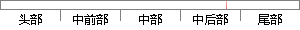

（5）根据 式由R^' (k)做IFFT计算互相关函数的精细时域波形r^' (n)；
片段位置图

相似结果|
相似片段 1：） 根据（2.38）式由 '( )R k 做 IFFT计算互相关函数的精细时域波形 '( )r n ； （6） 根据（2.39）式搜索 '( )r n 的峰值，得到两路信号的时差
|
※ 片段修改建议 ※
近似词参考：- 根据：按照 凭据 依据
- 计算：计较 较量争论 盘算
- 互相：相互
- 相关：相干
- 精细：邃密 精致
系统自动生成语句：（5）按照 式由R^' (k)做IFFT计较相互关函数的邃密时域波形r^' (n)；
注：本片段修改建议为系统自动生成，仅供参考。